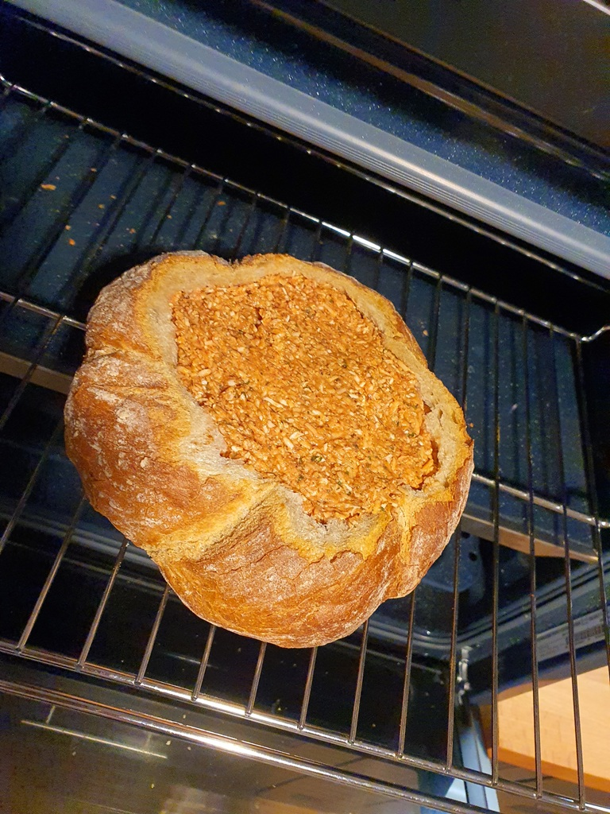
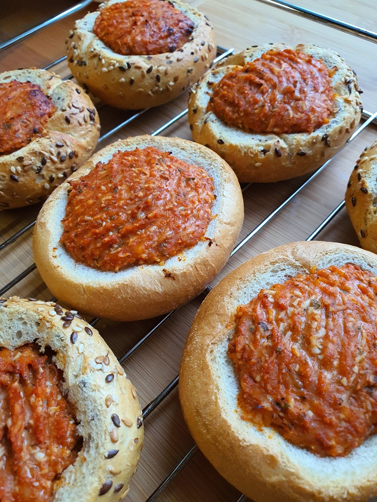
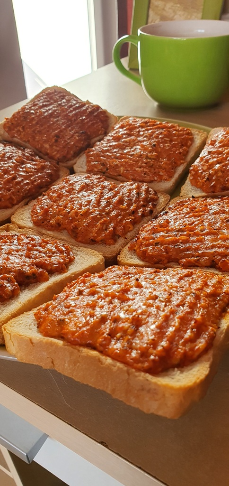
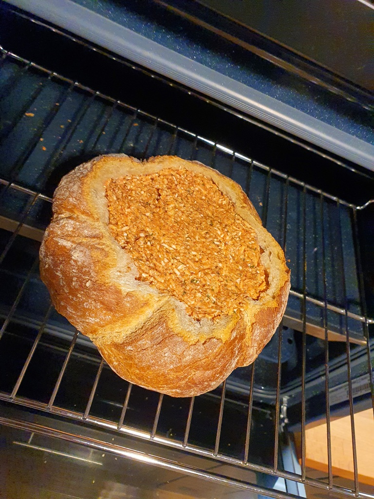
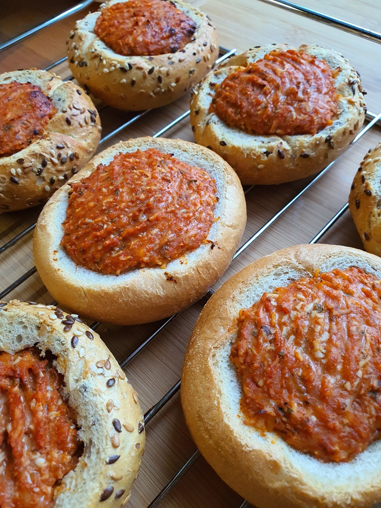
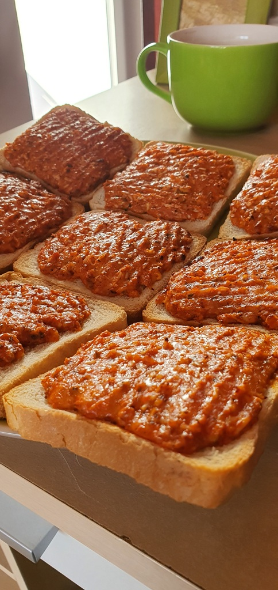

Skład:
- bułki;
- 250g sera żółtego tartego;
- 250g jaj na twarto tartych;
- przecier pomidorowy wg uznania;
- ketchup pomidorowy wg uznania;
- sól, pieprz, zioła prowensalskie, lubczyk, curry, papryka wędzona (bądź inne ulubione przyprawy wg uznania);
- pół żyżki musztardy (opcjonalne - wg przepisu Mamy);
Przygotowanie:
Wszystkie składniki wymieszać widelcem w misce na w miarę jednolitą masę. Przecier pomidorowy i ketchup wg uznania. Przyprawy wg własnego uznania. Bułki oskalpować i wydrążyć, następnie wypełnić masą. Opcjonalnie zrobić czepek z plastra sera.
Zdjęcia:
 




